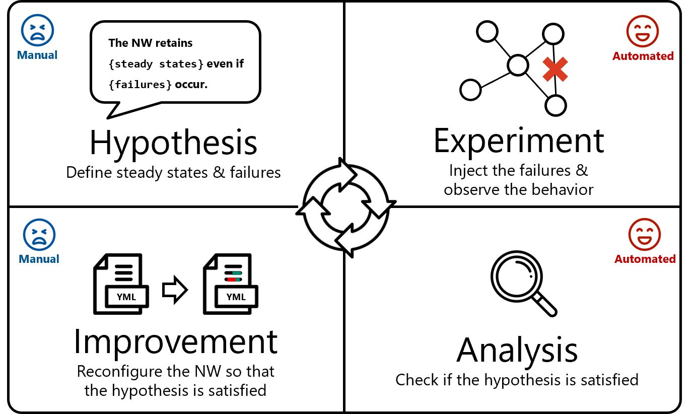

Background
Chaos Engineering (CE) is an engineering technique aimed at improving the resiliency of distributed systems. It involves artificially injecting specific failures into a distributed system and observing its behavior in response. Based on the observation, the system can be proactively reconfigured to handle those failures. Systematically, these CE operations are organized into a CE cycle consisting of four phases:
- Hypothesis: Define steady states (i.e., normal behavior) of the system and injected failures. Then, make a hypothesis that the steady states are maintained in the system even when the failures occur.
- Experiment: Inject the failures into the system while logging the system's response behavior.
- Analysis: Analyze the logged data and check if the hypothesis is satisfied. If so, this CE cycle is finished here. If not, move to (4).
- Improvement: Reconfigure the system to satisfy the hypothesis. The reconfigured system is tested again in (2) and (3), i.e., repeat (2) to (4) until the hypothesis is satisfied.
Recent CE tools, such as Chaos Monkey and Chaos Mesh, realize the automated execution of predefined CE experiments. Moreover, monitoring tools, such as Prometheus and k6, enable automating metric collection and threshold-based testing during chaos experiments. However, generative tasks, such as defining these experiments and reconfiguring the system after the experiments, still remain manual. To reduce the costs of these manual operations, we propose ChaosEater, a system for automating the entire CE cycle with Large Language Models (LLMs).

Proposed System: ChaosEater
ChaosEater is the first LLM-based system designed to fully automate the systematic CE cycle.
Its three key features to achieve fully automated CE are as follows:
1. Infrastructure as Code x LLMs for Software Engineering
2. Agentic Workflow for Chaos Engineering
3. New components: VaC, Interfaces between LLMs and CE tools

Examples
Example #1: Nginx
System description
Nginx is a small-scale system that consists of two K8s manifests (i.e., two resources):
Problem setting
To verify whether ChaosEater can improve the system when there are resiliency issues, we intentionally configure the resource with a non-resilient setting; we set the
Results
Given the Nginx, ChaosEater defined "The
In the experiment phase, ChaosEater executed the chaos experiment to validate the steady states and successfully discovered that the
In the analysis and improvement phases, ChaosEater analyzed the results and identified that the issue was caused by the
Finally, ChaosEater re-executed the chaos experiment on the reconfigured Nginx and confirmed that the hypothesis was satisfied.
The cost and time for this CE cycle were approximately 0.21 USD and 11 minutes, respectively.
Example #2: SockShop
System description
SockShop is a practical and large-scale e-commerce system that consists of 29 manifests, which define the resources and databases for front-end pages, user information, order, payment, shipping, and so on. The number of replicas of all the
Problem setting
To narrow down this original resiliency issue to a single point, we increase the replicas for
Results
Given the SockShop with adjusted replica counts, ChaosEater defined "
In the experiment phase, ChaosEater executed the chaos experiment to validate the steady states and successfully discovered the existence of downtime after the
In the analysis and improvement phases, ChaosEater analyzed the results and identified that the downtime was caused by the replica count of the
Finally, ChaosEater re-executed the chaos experiment on the reconfigured SockShop and confirmed that the hypothesis was satisfied.
The cost and time for this CE cycle were approximately 0.84 USD and 25 minutes, respectively.
Discussion
Broader Impacts
Moreover, the outputs of ChaosEater can also serve as training materials (including both good and bad practices) for the Chaos Game Day, a hands-on training exercise for CE engineers.
Limitations
- Deployed environment: Although CE is ideally conducted in actual production environments, ChaosEater is currently only supported in development environments.
- Limited to K8s manifest reconfiguration: Software systems consist of not only K8s manifests but also other types of codebases, such as HTML/CSS/JS and Python. To optimally improve system resiliency, reconfiguration of all types of codebases is necessary. However, ChaosEater currently supports reconfiguring only K8s manifests.
- Vulnerability discovery: In case studies, ChaosEater succesfully improved systems with somewhat obvious resiliency issues. However, for systems that already possess a certain level of resiliency, ChaosEater fails to find new hidden issues through a CE cycle. This is a challenging task even for skilled engineers. Therefore, ChaosEater is currently capable of performing only at a level comparable to or lower than that of engineers.
Future Directions
- Production deployment and security: If ChaosEater is deployed in production environments, further research on security will be necessary. This includes controlling more carefully the impact range of artificial failures (i.e., blast radius), preventing ChaosEater from being misused as a proxy to attack production services, and proposing emergency response measures, such as a higher-level monitoring system that continuously monitors ChaosEater and can intervene if necessary.
- LLMs x Graphs: When reconfiguring systems across multiple types of code, it is essential to consider their dependencies. To achieve this, LLMs must have the capability to recoginize the complex dependencies as a graph. We belive that leveraging recent advancements in LLMs x Graphs could effectively address this challenge.
- Fully automation of long-term multiple CE cycles: To overcome the third limitation, it is necessary to conduct multiple CE cycles for more complex systems over extended operational periods. By using ChaosEater's output as input for the next CE cycle, we can automate multiple CE cycles even with the current ChaosEater. However, we additionally need to develop techniques to manage the long-term history of the continuous CE cycles.
- Evaluation frameworks: As there are currently no datasets and benchmarks for CE, we will consturct them to enable more solid validation of ChaosEater. Besides, we plan to propose new metrics for quantiatively evaluating CE cycles conducted by ChaosEater. This is not easy because, even in cases where no improvements are made, CE cycles can still provide valuable insights. Therefore, the quality of CE cycles should not be judged solely based on whether improvements were made; metrics that consider its philosophical aspects are also necessary.
Citation
@misc{dkiku2025chaoseater,
title={ChaosEater: Fully Automating Chaos Engineering with Large Language Models},
author={Daisuke Kikuta and Hiroki Ikeuchi and Kengo Tajiri},
year={2025},
eprint={2501.11107},
archivePrefix={arXiv},
primaryClass={cs.SE},
url={https://arxiv.org/abs/2501.11107},
}